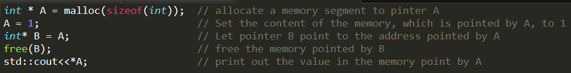

A Tentative Analysis of Rust Language Becoming a Major Language in the Future
Introduction
Which language is the best programming language is one of the most controversial problems for many programmers. From the moment it was published, a new language called Rust, has become quite competitive in this battle of languages. “Rust is a systems programming language focused on three goals: safety, speed, and concurrency” (Rust Documentation). By offering low-level memory manipulation and reliable safety, the Rust language has grabbed an enormous number of “crazy” fans from different developer groups. The users of Rust range from system programmers to the web developers who all have a great passion to explore this amazing language (Burgdorf). Before Rust, most people believed that safety was a tradeoff for control of low-level memory for high-level programming languages. For example, C and C++ provides a strong control to the memory, but it is very easy to crash the program in which it is being written. However, Rust solves this problem perfectly by the ownership and lifetime model, which retains Rust’s safety, while also staying a good high-level object oriented programming language. This achieved in that, Rust does not give up any property to achieve its goals. It still supports objects, generics, functional programming, etcetera. Based on these aforementioned properties, I argue that Rust has a great potential to be a major programming language in the near future.

Definition of Safety
As stated, safety is a vital part of Rust language. However, what does “safety” mean for a programming language? In the lecture notes on Language-Based Security, professor Erik argues that “by a safe programming language, people mean one that provides memory safety and type safety” (Poll 11). In other words, the safer a language is, the less run-time crash will be encountered.
First, let us discuss about the memory safety. Memory safety means that a coding language guarantees that code can only access memories that it is allowed to, if does not do so, it will cause the famous error, “segmentation fault.” One example of this segmentation fault error is the dangling pointer, which means that a pointer points to an illegal memory. The code segment in figure 1 is an example of this dangling pointer. At the beginning, the program allocates a memory to an integer pointer, A, and assigns the value 1 to it. Then it makes a new pointer, B, to point to the same address pointed at by A and then frees the content of B, which in turn frees the content of A. Now, because the memory of A is released, the pointer A becomes a dangling pointer. If we try to print out the value that was contained in then memory pointed by A, it will cause a segment fault. On the other hand, in a safe language, such as Rust, this will cause a compile error, because the code changes the content pointed at by A. Having your code create a compile error, in a language with memory safety, rather than a segment fault, in an unsafe language, allows for errors is one’s coding to be much more easily detectable.
In addition to memory safety, type safety is another important part of a programming language being considered “safe”. Type safety is when a language, that owns a type system, checks its type system during its compile time. This is considered safe, because it can help a programmer detect any errors before they even run the code. In contrast, there are some unsafe languages that don’t have a type system what-so-ever. Also, there are some languages that contain a type system, but are not considered to be type safe, as they check a user’s type during its runtime rather than during its compile time. Therefore, a coding language, which contains a type system that is type safe allows for errors to be detected far earlier than those that are unsafe.
After discussing safety, people may raise the question, “why safety does matter?” When people talk about Rust, they always speak about Rust’s safety as being its biggest merit. Therefore, what are the advantages of having a safe language. The main benefit is that the safe languages can help us write security systems. One example, which Professor Erik gives, is the login method. If a programmer writes a login function, login (username, password), in an unsafe language, they must consider all the cases that the program will meet, and then come up with a method to deal with them. If they don’t, the function may crash and return some unexpected value, which may be used by hackers to crash the system. However, in most of the cases, the function will be written in an isolated condition; in other words the author does not know how their code will be used. The login function may be used to login to an operating system or login in to a website. So, if a programmer used an unsafe language to create their code, it could potentially cause problems for the many who use their code as well. However, if a programmer uses a safe language, they can easily check for and fix errors in their programs so that they cannot be hacked or crashed as easily, which also creates a safer environment for those who use their code as well. For this reason, unsafe languages are considered unsafe in the real world as well. Thus, when Rust was published, there were lots of programmers who were excited. As there was finally a safe language that was also able to access low-level memory.
Advantages of Rust
After understanding the importance of safety, we can now begin to discuss the advantages of Rust. This was claimed in the official document published by the developers of Rust, “Rust is totally a safe programming language” (Matsakis). Because of the safety, Rust is more effective than C for some projects. For example, a research group implements a garbage collection tool in both C and Rust. In comparing the performance of the project written in both C and Rust, the code in Rust is only slightly slower than that in C, one of the fastest programming languages, which means that the Rust can build high-performance low-level projects. However, the programmers who code in Rust encounter less problems than those who program in C, because they do not need to worry about safety issues. The Rust programmer can now focus their attention on implementing their projects.
Rust is also much faster than other safe languages that use garbage collection such as java. While running a program, the user must allocate some memory to variables. When the user does not need those variables any more, the memory becomes garbage and must be freed. Languages, such as C and C++, require users to free the memory manually. Doing so, is not safe because it may cause dangling pointer, which will crash the program. In other words, to be safe, the language must deal with the garbage automatically. Garbage collection is one way to solve this problem. The algorithm of garbage collection is that the program lets the system transverse all the memory which can be visited by the code. Then, the algorithm will free the memory which cannot be visited. Although this algorithm helps a programming language achieve memory safety, it also makes the language slower. Rust’s ownership and lifetime model is the feature that makes rust unique and powerful; it helps crack this garbage problem without any cost on its speed (Matsakis and Klock 1). Rust’s ownership means that a value can only belong to one variable. Rust’s lifetime means that when the program goes out of a scope, the value of the variable in this scope will be dropped. According these features, Rust only needs to check the ownership during the compile time and does not need to sacrifice any time during the run time. This model is the key feature that makes Rust safe as well as fast.
Besides these language features, the community of Rust is also a strong power, which has made Rust become popular. Because Rust’s community is both active and helpful, they have provided easy access to tons of learning materials about Rust. On sites like “Github,” there are repositories that contain various kinds of materials that help people who are interested in Rust to start to learning Rust. Also, when one runs into some trouble, they can get high-quality answer quickly from the community. Christoph Burgdorf, a famous coder, talks about his own experience in his blog, “I’ m probably the one with the most stupid Rust questions on ‘StackOverflow’ but people invest a lot of time to put together great answers” (Burgdorf). Although the Rust language is harder than most of other languages, beginners will not feel alone while learning it. According to a poll from “StackOverflow,” Rust ranks number one on their the list of “The Most Loved, Dreaded, and Wanted Languages.” In short, Rust has become more and more popular among programmers.
Criticisms to Rust
Although Rust has many advantages, the advance features always have some costly tradeoffs. In fact, one of the largest tradeoffs of rust language is its long learning curve. As professor Hao Chen, a Professor of Engineering: computer Science at University of California Davis, said, “if the difficulty of C is 1, and the difficulty of C++ is 3, then the difficulty of Rust is 10.” This diffulty is because, the concept of ownership is new to most programmers. So, beginners need a long time to get used to it. Because Rust maintains a reliable and safe system before runtime, the user must eliminate all potential errors before the code is compiled. For this reason, new users need to make significant efforts to make their programs work. In comparison, in C++, it is very easy for new users to make their programs works. However, in C++ if the programmers are not careful enough, they may face to thousands of crashes during runtime. Because Rust can detect these errors before runtime, it is fair to spend more time to understanding the basic concept of rust. Also, Rust’s rules sometimes are so strict that users need to use an unsafe mode to complete their project efficiently (Yi 93). Fortunately, this condition is rare to encounter. As a beginner myself, I have not even met this kind of situation yet.
Conclusion
All in all, this research shows that the rust is a powerful coding language. As safety is very important for a language, Rust’s highly reliable programming environment makes it competitive against other languages. It also introduces an innovative memory manipulation system that can clear the memory garbage without any costs. Due to this, Rust is an efficient and safe language that constructs a completely new way for people to write code. Besides that, Rust also has many strong and helpful user groups that allow for people to learn from each other and improve quickly, despite Rust’s difficulty as a language. In short, Rust has a great potential to be a major language in the future.
Work Cited
Matsakis , Nicholas D., and Felix S. Klock. " The Rust Language." HILT '14 Proceedings of the 2014 ACM SIGAda annual conference on High integrity language technology, 18, Oct. 2014, 103-04, doi: 10.1145/2663171.2663188.
Lin Yi, Steve Backburn, Antony Hosking, and Michael Norrish. "Rust as a language for high performance GC implementation." ISMM 2016 Proceedings of the 2016 ACM SIGPLAN International Symposium on Memory Management. ACM New York, NY, USA, 14 June. 2016, pp. 89-98, doi: 10.1145/2926697.2926707
Burgdorf , C. "Rust will be the language of the future." Christoph Burgdorf's Blog, 18 July 2014. https://cburgdorf.wordpress.com/2014/07/17/rust-will-be-the-language-of-the-future/ Accessed 10 May 2017.
"Stack Overflow Developer Survey 2017." Stack Overflow. Web. 24 May 2017. https://insights.stackoverflow.com/survey/2017#most-loved-dreaded-and-wanted
“The Rust Programming Language”, Rust Documentation, 23, May. 2017, https://doc.rust-lang.org/book/